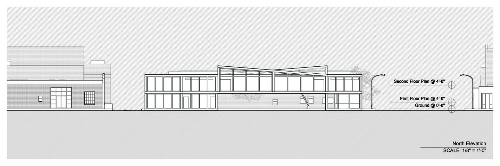

The CASP Art School
Fall 2022
Precedent Study
The design of the CASP Art School began with a precedent analysis of Villa VPRO and the Farnsworth House. The distinctive roof forms of Villa VPRO, along with the glass façade and structural grid of the Farnsworth House, served as primary sources of inspiration.
Elevation Studies
Modular Development
Through iterative development, a modular unit was created to define diverse, flexible spaces within the design. Five of these modules were combined to form the overall structure, with additional modifications made to address specific programmatic requirements.
Sectional Analysis
Project Summary
These refined spaces collectively shaped the final articulation of the CASP Art School, resulting in a cohesive architectural composition that responds to both function and form.